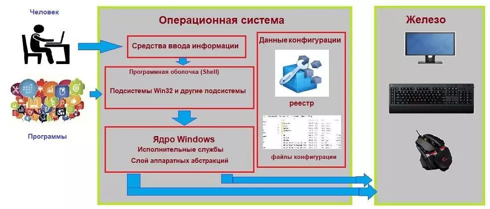
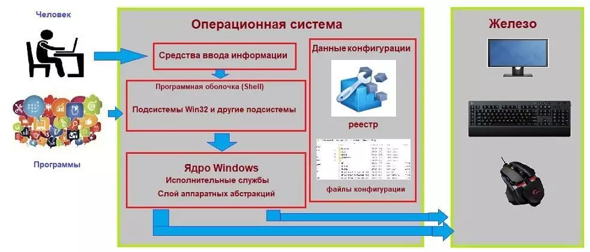

Операционные системы
Что такое операционная система
Операционная система (ОС, OS, operating system) — это набор программ, обеспечивающих работу компьютера или другого устройства и взаимодействие с ним пользователя.
Любые компьютеры, будь то ПК, ноутбуки, смартфоны или планшеты, состоят из двух групп компонентов:
Аппаратной части — процессора, оперативной памяти, клавиатуры, компьютерной мыши и так далее.
Программного обеспечения — системного и прикладного софта.
Чтобы они понимали друг друга, а пользователь мог взаимодействовать с устройством (запускать приложения), необходим посредник — операционная система.ОС выполняет много функций:
создаёт удобный для пользователя интерфейс;
стандартизирует доступ к устройствам ввода и вывода, например к клавиатуре и дисплею;
координирует распределение ресурсов между запущенным программным обеспечением;
Компоненты операционной системы
Операционная система представляет собой многослойную структуру, в центре которой находится ядро. Поверх него располагаются драйверы и службы, а оболочкой выступает пользовательский интерфейс.
Ядро
Это основа операционной системы. Ядро представляет собой часть программного обеспечения, работающую напрямую с компонентами компьютера.
Также оно отвечает за управление процессами, памятью компьютера, файловой системой, обработку входных и выходных данных.
Драйверы
Это программное обеспечение, благодаря которому операционная система работает с подключённым в устройстве «железом».
Без драйверов она не узнает, что могут делать видеокарта, клавиатура, принтер и другие комплектующие и как правильно отправлять к ним запросы.
Пользовательский интерфейс
Бывает графическим (GUI) и командным (CLI).
Графический интерфейс (GUI) представляет собой визуальную среду с кнопками, иконками, меню и диалоговыми окнами.
Именно он используется по умолчанию в Windows, macOS, Android, iOS и средах рабочих столов Linux.
Командный интерфейс (CLI) использовался в DOS, а сейчас реализован в виде терминала в Linux и macOS и командной строки в Windows, в которых пользователь вводит команды с клавиатуры.
CLI даёт возможность гибко управлять системой, используя функции и скрипты. Его чаще всего используют разработчики и системные администраторы.
Виды операционных систем
Все существующие ОС можно классифицировать по нескольким признакам: разрядности, типу лицензии и области применения.
По разрядности
32-битные (x32). Адресуют до 4 ГБ оперативной памяти и могут запускать программы, написанные только под 32-битную систему.
64-битные (x64). Ограничение по оперативной памяти — до 16 ТБ. Такие ОС поддерживают 64-битные программы, а 32-битные запускают через эмулятор.
По области применения
Серверные операционные системы используются на серверах. Они включают в себя инструменты для обмена данными между компьютерами через сетевые соединения. Такими ОС являются Windows Server и Unix-системы для серверов.
Клиентские — системы для использования на автономных компьютерах или устройствах, подключённых к серверам. К примеру, Windows 11, macOS 14.3 или Ubuntu Linux.
Мобильные операционные системы разработаны для смартфонов и планшетов. Они позволяют работать с мобильными приложениями, управлять настройками сотовой сети и энергопотреблением. К ним относят Android и iOS.
История развития операционных систем
История развития операционных систем насчитывает около 70 лет. За это время простейший набор заданий для мейнфреймов, написанный на перфоленте, эволюционировал в то, что сейчас мы видим на экране компьютера.
Всю историю можно разделить на три этапа.
Первый этап (1955–1965 годы)
История операционных систем начинается в 1955 году, когда инженер General Motors Роберт Л. Патрик и программист North American Airlines Оуэн Мок разработали для IBM 704 GM-NAA I/O.
Её иногда называли системой ввода — вывода.
Второй этап (1965–1980 годы)
В 1969 году в исследовательской лаборатории Bell Labs разработали ОС Unix. Она — основа современных операционных систем.
Unix поддерживала язык C и протокол TCP/IP. Это первая ОС, которую можно было установить на сервер. К ней могли подключиться компьютеры-клиенты, позволяя одновременно работать нескольким пользователям.
Третий этап (1980 — настоящее время)
В это время появляются персональные компьютеры, доступные не только корпорациям и университетам, но и обычным пользователям.
В 1984 году компания Apple выпускает первую систему для своих Macintosh под названием System 1, созданную на основе Alto OS.
С её помощью Стив Возняк планировал избавить пользователей от сложности существующих ОС и вывести компьютеры компании на массовый рынок.
Популярные операционные системы
С момента разработки первой операционной системы прошло больше 60 лет.
Было выпущено огромное количество разных ОС, но к сегодняшнему дню популярность обрели продукты компаний-гигантов и модификации операционных систем с открытым исходным кодом.
Windows. Знакомая большинству операционная система с многолетней историей. Её главные преимущества — это дружелюбный интерфейс, обширная совместимость с программами, играми и периферией. Это сделало её самой популярной системой среди пользователей ПК и ноутбуков. Но она является платной, закрытой и требовательной к «железу».
macOS — ОС для Macbook и iMac. Компания Apple постаралась над архитектурой своей «оси» и максимально оптимизировала её под используемые комплектующие.
В первые годы macOS преимущественно выбирали специалисты творческих профессий — видеомонтажёры, журналисты и другие, — но сейчас многие покупают устройства компании из-за их стабильной работы и личных предпочтений к дизайну.
Любителям тонкой настройки операционной системы и инструментов с открытым исходным кодом подойдут бесплатные Linux-подобные ОС. В них удобно администрировать серверы, работать с базами данных и вообще делать всё то же самое, что и в Windows и macOS.
Android распространяется с открытым исходным кодом. Большое количество компаний разрабатывают на его основе собственные интерфейсные оболочки для своих Android-смартфонов.
Такие преимущества ОС, как понятное управление, возможности широкой настройки интерфейса, большой магазин приложений, завоевали «Андроиду» популярность у производителей мобильных устройств и других портативных гаджетов.
iOS устанавливается только на мобильные устройства от Apple. Вместе они образуют единую экосистему, что является одновременно и плюсом, и минусом.
Сами по себе они работают быстро и стабильно, отлично синхронизируясь с другими гаджетами компании. Но при взаимодействии со сторонними ОС могут возникать ошибки.
Система является закрытой, поэтому кастомизировать её не получится, а приложения можно установить только из официального магазина — App Store.
Компоненты Windows, или из чего Windows состоит307092.png">

 Компоненты Windows, или из чего Windows состоит

Как работает Windows: программная оболочка = Shell
Это часть операционной системы, которая завязана и с пользователем и с приложениями. Именно шелл позволяет нам запускать флешки, устанавливать программы, запускать word-вый документ и печатать в нём, сохраняя в любое дозволенное системой место, которое заметно проводнику. Shell – это и File Explorer (проводник Windows), и контрольная панель Пуск, и окна Свойства системы и Мой компьютер. Человек или пользователь знает шелл как различные инструменты пользовательского интерфейса, такие как диалоговые окна, ярлыки и иконки, контекстные меню дополнительных команд.
А для программ шелл это команды и процедуры, которые эти программы могут вызывать: печать информацию через принтер, читать данные из баз, отображать что-то на экране.
Сам шелл состоит из нескольких подсистем, которые управляются в пользовательском режиме. Такой режим означает, что эти подсистемы имеют очень ограниченный доступ к системной информации, и доступ к “железу” может осуществляться ТОЛЬКО через системные службы (службы самой Windows). Одна из таких подсистем – подсистема безопасности Win32 – обеспечивает вход в систему (регистрацию пользователя), сохранение и распространение его привилегий на файлы и папки, а также другие функции безопасности. Абсолютно все программы и приложения “здороваются с Windows” только через подсистему Win32.
Как работает Windows : Ядро
Как и в других ОС, отвечает за работу с оборудованием, которое внутри компьютера находится или во время работы к компьютеру “пристёгивается”. Режим ядра полномочий имеет гораздо больше. Никакая программа, установленная в Windows, не имеет доступа к “железу” напрямую – только через шелл, который, в свою очередь, посылает все запросы к ядру. Такая система взаимодействия обеспечивает стабильную работу ОС. Это чем-то напоминает ресторан: перед тем как заказать блюдо, вам нужно позвать официанта (к шеф-повару и на саму кухню вас не пропустят).
Ядро состоит из двух компонентов:
слой аппаратных абстракций HAL – hardware abstraction layer
– (ближайший к железу уровень)
уровень исполнительных служб (обеспечивает взаимодействие подсистем в пользовательском режиме со слоем аппаратных абстракций)
Что здесь нужно запомнить? Логика работы ясна уже из описания: исполнительные службы Windows работают с оборудованием при помощи самого HAL и драйверов для конкретного устройства.
Такой принцип работы устанавливается незаметно для глаз пользователя в момент установки Windows на компьютер. В тот самый момент, когда мы видим строки состояния установки компонентов и служб/программ, и строится структура слоя HAL на основе процессора, который в материнской плате вашей машины установлен. То есть привычные процессы во время установки Windows предстают теперь в таком свете:
приглашение к компиляции HAL
То, что появится после установки ОС, перенести на другой компьютер один в один не получится:
для нормальной работы в новой конфигурации до– или переустановка отдельных драйверов или целого их пакета неизбежна.Как работает Windows: Данные конфигурации
Ну, а всем операционным системам нужно место, где данные о программах и оборудовании, а также настройках и предпочтении пользователя можно хранить. Нужно хранить информацию и о том, как пользователь хочет, чтобы Windows и программы выглядели, где хранить скачиваемое и создаваемое и т.д. Для всего этого (или для почти всего)
Windows использует … правильно, реестр. Некая информация хранится в файлах инициализации (характерные файлы с расширением .ini и .inf).
Компоненты Windows, или из чего Windows состоит

Как работает Windows: программная оболочка = Shell
Это часть операционной системы, которая завязана и с пользователем и с приложениями. Именно шелл позволяет нам запускать флешки, устанавливать программы, запускать word-вый документ и печатать в нём, сохраняя в любое дозволенное системой место, которое заметно проводнику. Shell – это и File Explorer (проводник Windows), и контрольная панель Пуск, и окна Свойства системы и Мой компьютер. Человек или пользователь знает шелл как различные инструменты пользовательского интерфейса, такие как диалоговые окна, ярлыки и иконки, контекстные меню дополнительных команд.
А для программ шелл это команды и процедуры, которые эти программы могут вызывать: печать информацию через принтер, читать данные из баз, отображать что-то на экране.
Сам шелл состоит из нескольких подсистем, которые управляются в пользовательском режиме. Такой режим означает, что эти подсистемы имеют очень ограниченный доступ к системной информации, и доступ к “железу” может осуществляться ТОЛЬКО через системные службы (службы самой Windows). Одна из таких подсистем – подсистема безопасности Win32 – обеспечивает вход в систему (регистрацию пользователя), сохранение и распространение его привилегий на файлы и папки, а также другие функции безопасности. Абсолютно все программы и приложения “здороваются с Windows” только через подсистему Win32.
Как работает Windows : Ядро
Как и в других ОС, отвечает за работу с оборудованием, которое внутри компьютера находится или во время работы к компьютеру “пристёгивается”. Режим ядра полномочий имеет гораздо больше. Никакая программа, установленная в Windows, не имеет доступа к “железу” напрямую – только через шелл, который, в свою очередь, посылает все запросы к ядру. Такая система взаимодействия обеспечивает стабильную работу ОС. Это чем-то напоминает ресторан: перед тем как заказать блюдо, вам нужно позвать официанта (к шеф-повару и на саму кухню вас не пропустят).
Ядро состоит из двух компонентов:
слой аппаратных абстракций HAL – hardware abstraction layer
– (ближайший к железу уровень)
уровень исполнительных служб (обеспечивает взаимодействие подсистем в пользовательском режиме со слоем аппаратных абстракций)
Что здесь нужно запомнить? Логика работы ясна уже из описания: исполнительные службы Windows работают с оборудованием при помощи самого HAL и драйверов для конкретного устройства.
Такой принцип работы устанавливается незаметно для глаз пользователя в момент установки Windows на компьютер. В тот самый момент, когда мы видим строки состояния установки компонентов и служб/программ, и строится структура слоя HAL на основе процессора, который в материнской плате вашей машины установлен. То есть привычные процессы во время установки Windows предстают теперь в таком свете:
приглашение к компиляции HAL
То, что появится после установки ОС, перенести на другой компьютер один в один не получится:
для нормальной работы в новой конфигурации до– или переустановка отдельных драйверов или целого их пакета неизбежна.Как работает Windows: Данные конфигурации
Ну, а всем операционным системам нужно место, где данные о программах и оборудовании, а также настройках и предпочтении пользователя можно хранить. Нужно хранить информацию и о том, как пользователь хочет, чтобы Windows и программы выглядели, где хранить скачиваемое и создаваемое и т.д. Для всего этого (или для почти всего)
Windows использует … правильно, реестр. Некая информация хранится в файлах инициализации (характерные файлы с расширением .ini и .inf).
 И когда установленная программа запускается, перед появлением какого-либо окна она сначала посмотрит реестр и прочитает эти файлы, и только потом уже запуск приложения можно считать успешным.
Как Windows управляет программами?
Если программа установлена, мы подразумеваем, что её остов где-то хранится. Чаще всего это жёсткий диск или флешка.
Когда пользователь запускает программу, некоторые из её файлов копируются в оперативную память. Так появляется процесс. практически в том виде, каком мы видим его в Диспетчере задач или Process Explorer.
Процессом можно назвать программу, запущенную вместе с соответствующими системными службами и другими ресурсами. Ресурсы нередко включают в себя и другие программы, включая захват дополнительных ячеек оперативной памяти для временного хранения данных. Когда процесс делает запрос к системе по типу “Мне нужны ресурсы!”, подразумевается, что программа обращается именно к подсистеме Win32. Так появляется поток данных.
Поток – это единичная, выделенная задача (запустить или создать документ, вставить рисунок из буфера обмена, распечатать документ на принтере и т.д.). Схематично это выглядит так
И когда установленная программа запускается, перед появлением какого-либо окна она сначала посмотрит реестр и прочитает эти файлы, и только потом уже запуск приложения можно считать успешным.
Как Windows управляет программами?
Если программа установлена, мы подразумеваем, что её остов где-то хранится. Чаще всего это жёсткий диск или флешка.
Когда пользователь запускает программу, некоторые из её файлов копируются в оперативную память. Так появляется процесс. практически в том виде, каком мы видим его в Диспетчере задач или Process Explorer.
Процессом можно назвать программу, запущенную вместе с соответствующими системными службами и другими ресурсами. Ресурсы нередко включают в себя и другие программы, включая захват дополнительных ячеек оперативной памяти для временного хранения данных. Когда процесс делает запрос к системе по типу “Мне нужны ресурсы!”, подразумевается, что программа обращается именно к подсистеме Win32. Так появляется поток данных.
Поток – это единичная, выделенная задача (запустить или создать документ, вставить рисунок из буфера обмена, распечатать документ на принтере и т.д.). Схематично это выглядит так
 Как видите, потоков может быть несколько. Это называется многопоточность/мультипоточность: например, окна браузеров могут запускаться в нескольких вкладках или нескольких отдельных окнах. Выражаясь технически, в обоих случаях речь идёт о нескольких разных процессах браузер.exe.
Как видите, потоков может быть несколько. Это называется многопоточность/мультипоточность: например, окна браузеров могут запускаться в нескольких вкладках или нескольких отдельных окнах. Выражаясь технически, в обоих случаях речь идёт о нескольких разных процессах браузер.exe.